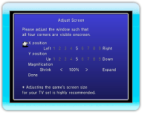

10 |
Schermata iniziale |
 |

Premi un pulsante sul telecomando Wii (tranne il pulsante HOME) nella schermata iniziale per accedere al menu iniziale. Muovi il cursore con

● "Adjust Screen" (Regola schermo)Modifica le impostazioni "X/Y position" (Posizione X/Y) (sinistra e destra/su e giù) e "Magnification" (Ingrandimento) in modo che i quattro angoli della finestra visualizzata coincidano con quelli dello schermo. Seleziona "Done" (Ok) quando hai finito.
|
 |
 |
 |